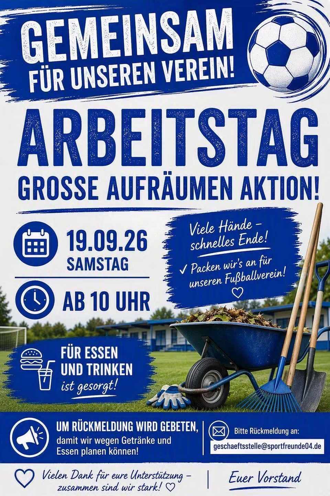

Karnevalabteilung „Die Schnauzer“
Fünf Gruppen von den Little Fruities bis zu den Dreamboys – die zweite Abteilung des Vereins.
Frankfurter Fußballverein Sportfreunde 1904 e.V. · Gallus
Elf Fußballmannschaften von der G-Jugend bis zu den Herren, eine Karnevalabteilung und ein eigener Platz an der Mainzer Landstraße. Wir sind ein Verein für Menschen: Gemeinschaft, Respekt und Freude am Spiel.
Probetraining vereinbaren Mitglied werden
Alle Spiele und Tabellen Spielplan im Handy-Kalender abonnieren
Alle Mannschaften trainieren auf dem Vereinsplatz an der Mainzer Landstraße 480 – nur die Herren auf der Anlage von SW Griesheim am Rebstock.
In den hessischen Schulferien und an Feiertagen findet in der Regel kein Training statt. Ausnahmen sagt das Trainerteam an.

Die Sportfreunde 04 Frankfurt setzen sich in einer spannenden Partie mit 4:1 gegen die TSG Niederrad 1898 durch!

Am Samstag, den 19.09.2026, ist es wieder soweit: Unser großer Arbeitstag mit Aufräumaktion steht an!
Kinder und Jugendliche können ein- oder zweimal ohne Anmeldung mittrainieren. Vorher klären wir, ob in der passenden Mannschaft Platz ist – am einfachsten per E-Mail an die Jugendleitung mit dem Jahrgang des Kindes. Danach ist der Aufnahmeantrag Pflicht.
E-Mail an die Jugendleitung mit Jahrgang und Vorerfahrung
Termin fürs Probetraining bekommen und ein- bis zweimal mitmachen
Aufnahmeantrag ausfüllen – Beiträge und Unterlagen stehen unter „Mitglied werden“
Frankfurter Fußballverein Sportfreunde 1904 e.V.
Mainzer Landstraße 480
60326 Frankfurt am Main
Der Parkplatz am Vereinsgelände ist wegen des Neubaus des Funktionsgebäudes voraussichtlich bis Ende Januar 2027 gesperrt. Der Zugang zum Gelände ist über den Hintereingang am „Haus der Jugend“ (Pavillon) möglich.
ÖPNV: Haltestelle und Fußweg folgen.
Fünf Gruppen von den Little Fruities bis zu den Dreamboys – die zweite Abteilung des Vereins.